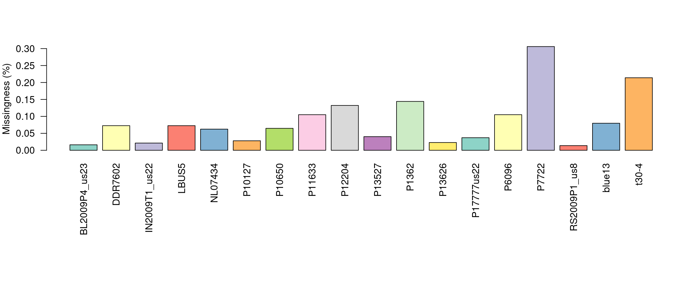
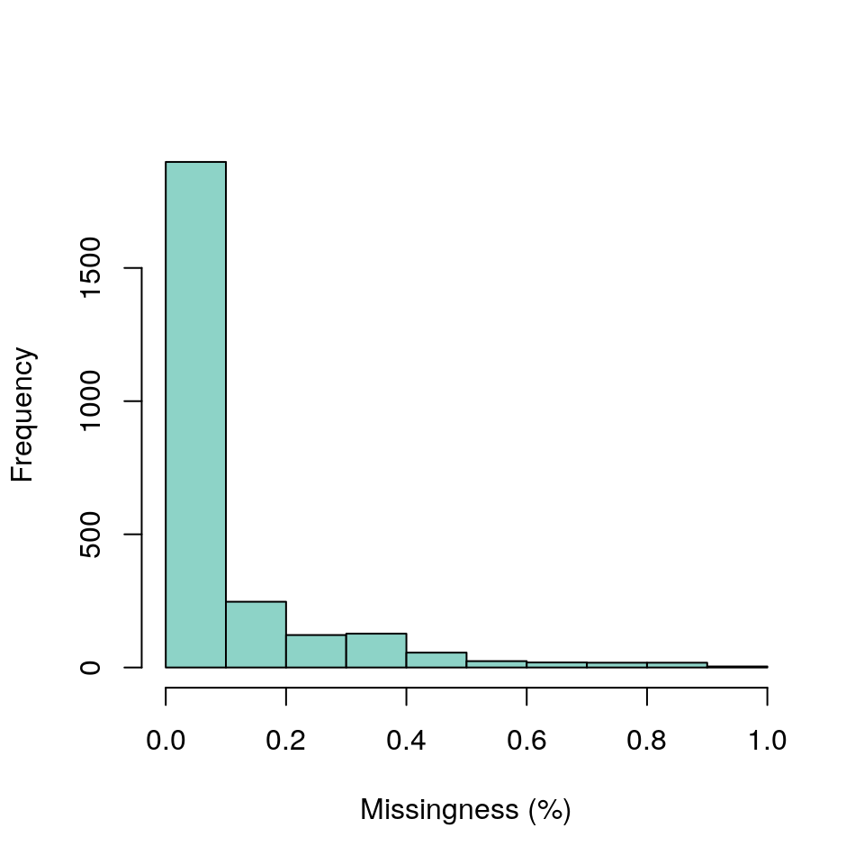
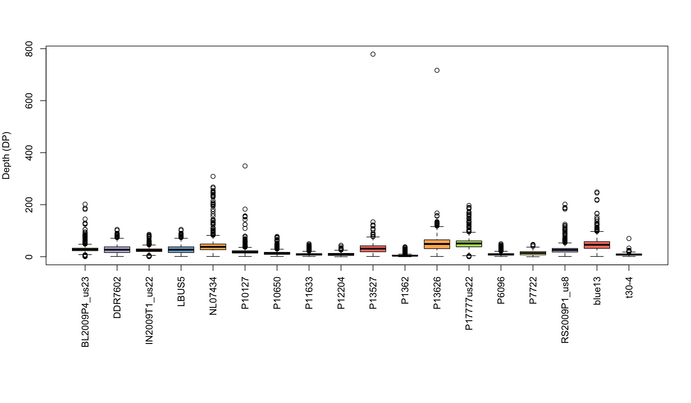
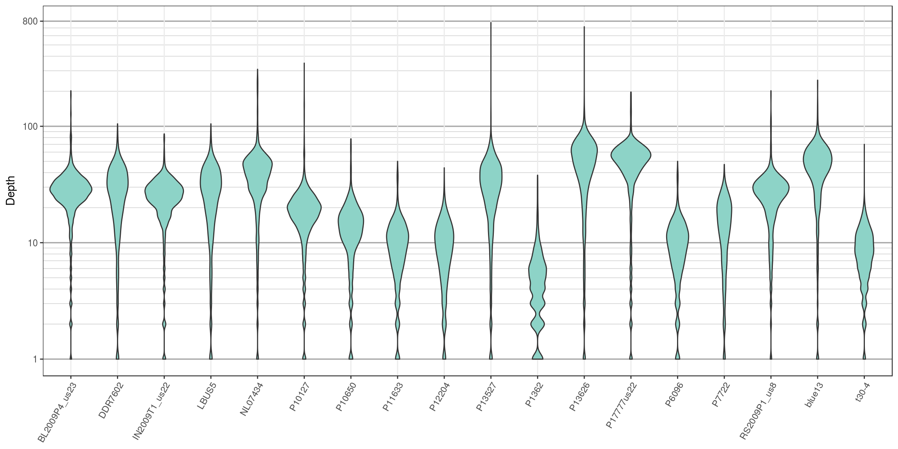
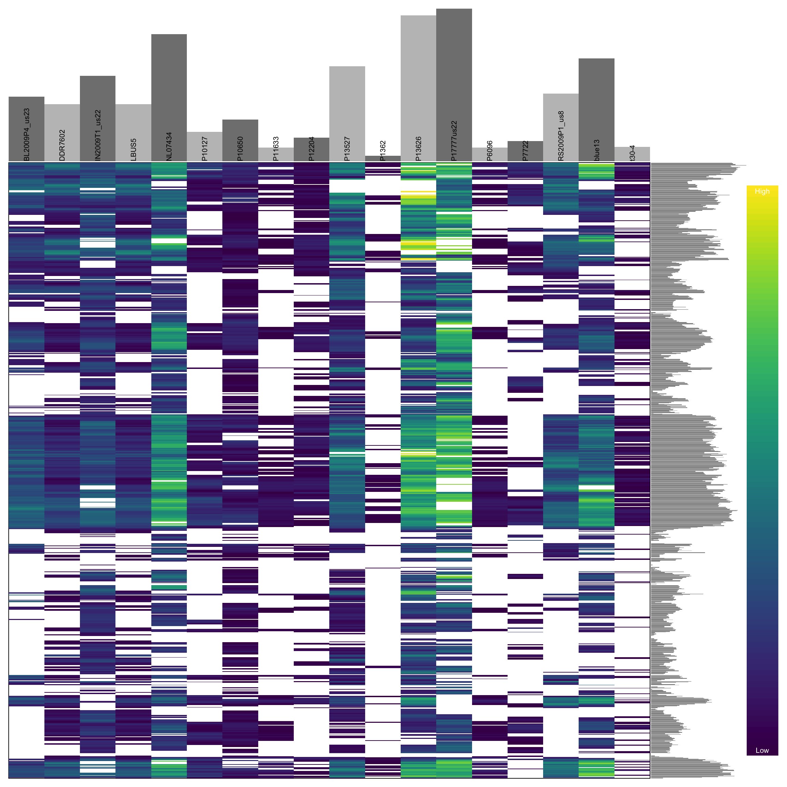
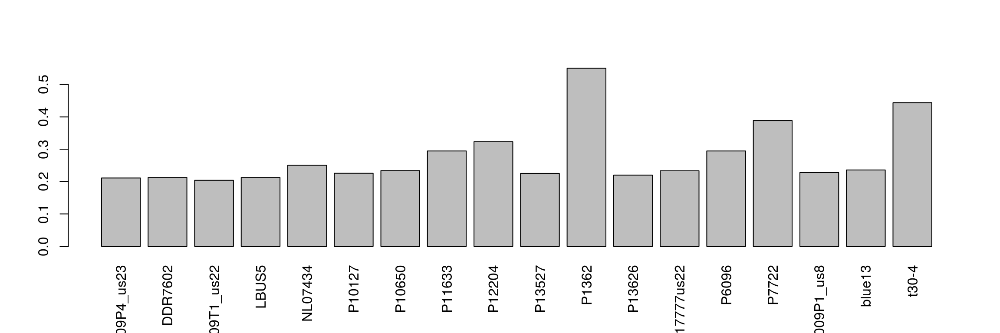
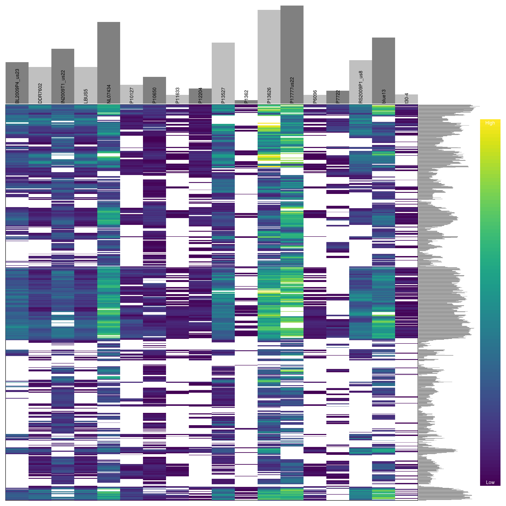
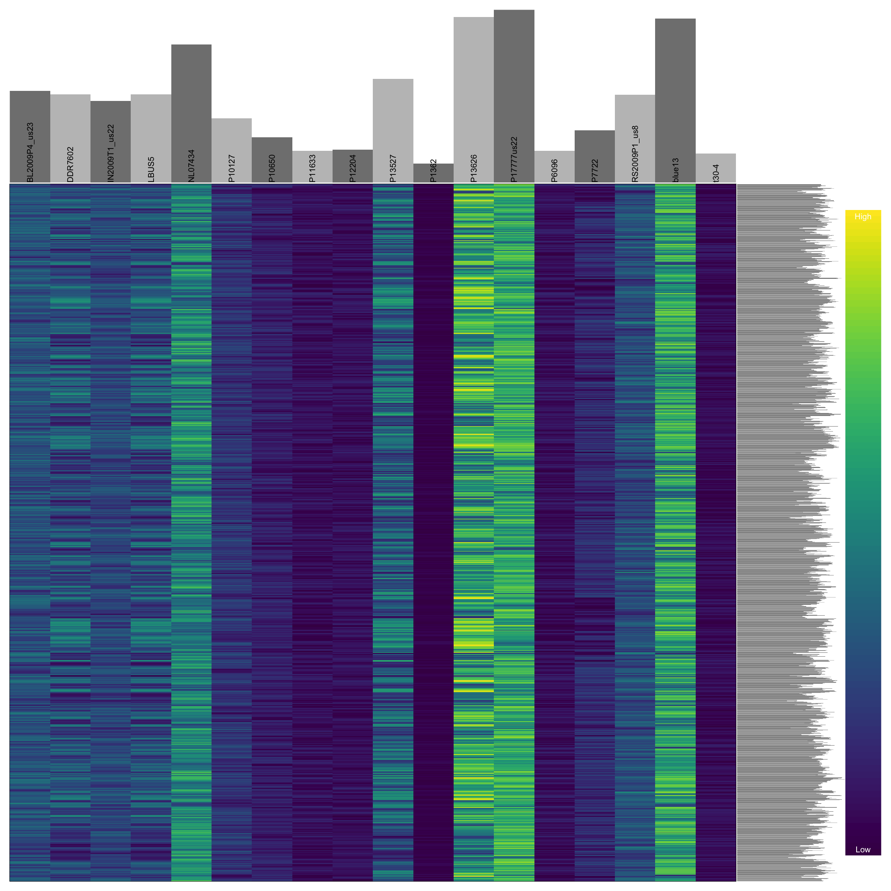

All data sets are not perfect. A critical step in and research project is to ensure the quality of the data and to develop mitigatation strategies to handle low quality data. A favorite statistics text poses the question ‘garbage in, roses out?’ [@]. While we all know the answer to this question, when we are presented with a data and are anxious to see what answers our analyses may present us with, its frequently easy to forget to ask this critical question. Many of the existing variant callers state that they aggressively call variants with the hope that these variants are filtered for quality. In this section we discuss methods to characterize quality issues and propose methods to handle these issues.
As the size of our dataset grow, in terms of samples and variants, the size of our data matrix grows. As the size of our data matrix grows, it also increases the opportunity to have missing data. Also, some of our quality filtering steps increased the degree of missingness in our data matrix by setting values that we determined to be of unusual quality to NA. One way of managing missing data is to use imputation, a set of methods that attempts to infer what the most likely genotype should be and replaces the missing genotype with the interpolated genotype. However, if your data has a large degree of missingness you may want to attempt to mitigate missingness instead of interpolation Or you may want to implement a mitigation step prior to interpolation in the hope that this will improve the performance of the interpolation. Missing data can frequently be due to samples (columns) or variants (rows) of low quality. Here we demonstrate how to identify samples and variants in the data set that have a high degree of missingness. In another section we’ll show how to omit them.
A first perspective on how complete our dataset is can be provided by the show method for the vcfR object. When you invoke the name of an object with no arguments it invokes the show method.
## ***** Object of Class vcfR *****
## 18 samples
## 1 CHROMs
## 2,533 variants
## Object size: 3.2 Mb
## 8.497 percent missing data
## ***** ***** *****The show method for an object typically reports a summary of what is contained in the object. Here we see the number of samples and variants in our data. We also see a report of what the percentage of missing data is in our object. In the context of vcfR this is the proportion of variants scored as NA. Note that if a variant includes some data associated with a missing genotype it will not be recognized as missing. For example, a missing genotype could be associated with a depth information as follows.
Because this variant does include some data it will not be recognized as missing until the genotypes are extracted and queried for missingness. This means that the degree of missingness reported by the show method may be an under representation. It does provide an easily accessed first perspective on the proportion of missing data. To determine the cause of this missing data (e.g., are there particular samples or variants of poor quality) we will look further.
To quantify missingness for a single sample we can use the function is.na(). This function uses a vector as an argument and returns a logical vector (TRUE and FALSE) indicating which values are NA. If we remind ourselves that TRUEs and FALSEs are numerically encoded as 1 and 0 it reminds us we can take a sum of this logical vector to determine the degree of missingness.
## [1] 0 1## [1] 1Now that we’ve reminded ourselves of how to count missing values we can apply this knowledge to query one of our samples. We’ll extract a matrix of variant depths (DP) from the VCF data. We can remind ourselves of what DP is in this VCF data by using the queryMETA() function. (Recall that we have already read in our VCF data to create a vcfR object in the section ‘Reading VCF data’.)
## [[1]]
## [1] "FORMAT=ID=DP" "Number=1"
## [3] "Type=Integer" "Description=Approximate read depth (reads with MQ=255 or with bad mates are filtered)"
##
## [[2]]
## [1] "INFO=ID=DP" "Number=1"
## [3] "Type=Integer" "Description=Approximate read depth; some reads may have been filtered"Here we’ll want the first definition (FORMAT=ID=DP). Now we can extract a matrix of depths and query the first sample for missingness.
## [1] 41This reports the number of missing variants in the first sample. We could similarly count the number of missing samples from a variant by accessing a row instead of a column. We could also convert this to a percentage by using length() to determine the total number of values in either the column or row and use this as a denominator.
This is illustrative of what we can accomplish for a single sample or variant. We typically have many samples an tens of thousand (or more) variants. We can extend the functionality of the above example to many columns or rows by using the apply() function. See the section on apply if you are unfamiliar with this function. Because we will be summarizing many samples we will use a barplot to visualize the results as opposed to trying to scrutinize the numerical information.
myMiss <- apply(dp, MARGIN = 2, function(x){ sum(is.na(x)) })
myMiss <- myMiss/nrow(vcf)
library(RColorBrewer)
palette(brewer.pal(n=12, name = 'Set3'))
par(mar = c(12,4,4,2))
barplot(myMiss, las = 2, col = 1:12)
title(ylab = "Missingness (%)")
This allows us to visualize the degree of missingness on a per sample basis. We see that the sample P7272 has a particularly high amount of missing genotypes. This is because this sample is a different species than the reference it was mapped to. One decision could be to omit this sample. However, if the goal is to make comparisons among these species we may instead search for variants that are present in both taxa.
We can do something similar to query the variants (rows) for missingness. However, when we have a large number of variants we wouldn’t want to visualize this with a barchart. It would require a barchart with 60 thousand bars. Instead of using a barchart we’ll use a histogram.
myMiss <- apply(dp, MARGIN = 1, function(x){ sum(is.na(x)) })
myMiss <- myMiss/ncol(vcf@gt[,-1])
hist(myMiss, col = "#8DD3C7", xlab = "Missingness (%)", main = "")
We’ve now seen how we can create summaries of our data matrix over both rows and columns. Once we have this knowledge in hand we may develop a plan for managing this data.
Once a sequencing run is complete the data are typically mapped to a reference genome, variants are called and these variant are stored in a VCF file. At this point one of the first questions asked is how well did the sequencing go? One measure of sequencing quality is sequence depth or how many times each position was sequenced. In VCF data only information on the variable positions are reported. But this can be used as a convenient subset of an entire genome. Many variant callers report this information, but not all. Make sure to check your variant caller documentation if you do not see this information in your file, there is a chance it was an option that was not selected. Here we visualize the depth information from a VCF file to provide a perspective on sequence quality.
We can extract the depth data (DP) with the function extract.gt(). This results in a matrix of depth data. We can take a quick peak at this to remind us what it looks like.
library(vcfR)
#vcf <- read.vcfR('TASSEL_GBS0077.vcf.gz')
data(vcfR_example)
dp <- extract.gt(vcf, element = "DP", as.numeric=TRUE)## BL2009P4_us23 DDR7602 IN2009T1_us22 LBUS5 NL07434
## Supercontig_1.50_2 62 12 37 12 NA
## Supercontig_1.50_246 10 NA 3 NA NA
## Supercontig_1.50_549 NA NA 2 NA NA
## Supercontig_1.50_668 1 NA 1 NA 1We see that it is a large matrix containing lots of numbers, so viewing it directly is of little use. Here we’ll demonstrate the use of barplots and violin plots to visualize this data.
Base R includes a great selection of graphical tools. One is barplot(). A few things nice about this function is that it is designed to work on matrices, such as the one we have, and that it is quick to execute.

We’ve generated a box and whisker plot for each sample where 50% of the data is contained within each colored box and outliers are presented as circles. One issue with this plot is that all of the data seem squished at the bottom of the plot. A log transformation could help this plot. Remember that log of zero is undefined, so if you persue a log transformation you may need to handle these cases.
Violin plots are similar to boxplots except that they attempt to present the distribution of the data that would otherwise be represented by a box. We’ll neeed to load a few packages to add functions to help us. I think you’ll see that violin plots are a little more involved to create, and they are slower to render, but many find them to be more informative and more aesthetically pleasing.
library(reshape2)
library(ggplot2)
library(cowplot)
# Melt our matrix into a long form data.frame.
dpf <- melt(dp, varnames=c('Index', 'Sample'), value.name = 'Depth', na.rm=TRUE)
dpf <- dpf[ dpf$Depth > 0,]
# Create a row designator.
# You may want to adjust this
#samps_per_row <- 20
samps_per_row <- 18
myRows <- ceiling(length(levels(dpf$Sample))/samps_per_row)
myList <- vector(mode = "list", length = myRows)
for(i in 1:myRows){
myIndex <- c(i*samps_per_row - samps_per_row + 1):c(i*samps_per_row)
myIndex <- myIndex[myIndex <= length(levels(dpf$Sample))]
myLevels <- levels(dpf$Sample)[myIndex]
myRegex <- paste(myLevels, collapse = "$|^")
myRegex <- paste("^", myRegex, "$", sep = "")
myList[[i]] <- dpf[grep(myRegex, dpf$Sample),]
myList[[i]]$Sample <- factor(myList[[i]]$Sample)
}
# Create the plot.
myPlots <- vector(mode = "list", length = myRows)
for(i in 1:myRows){
myPlots[[i]] <- ggplot(myList[[i]], aes(x=Sample, y=Depth)) +
geom_violin(fill="#8dd3c7", adjust=1.0, scale = "count", trim=TRUE)
myPlots[[i]] <- myPlots[[i]] + theme_bw()
myPlots[[i]] <- myPlots[[i]] + theme(axis.title.x = element_blank(),
axis.text.x = element_text(angle = 60, hjust = 1))
myPlots[[i]] <- myPlots[[i]] + scale_y_continuous(trans=scales::log2_trans(),
breaks=c(1, 10, 100, 800),
minor_breaks=c(1:10, 2:10*10, 2:8*100))
myPlots[[i]] <- myPlots[[i]] + theme( panel.grid.major.y=element_line(color = "#A9A9A9", size=0.6) )
myPlots[[i]] <- myPlots[[i]] + theme( panel.grid.minor.y=element_line(color = "#C0C0C0", size=0.2) )
}
We can see that the log transformation stretches out the smaller values and compresses the larger values. This allows us to focus on where our data has the greatest density. Things to look for in these plots are whether all samples are equally represented, whether there are a few samples of low quality that may need to be omitted from downstream analyses, or if therre are a small number of jackpot samples that received all the reads at the expense of the other samples. Here the samples appear to be fairly eqaully represented.
From the section where we created depth plots we see that there is a considerable amount of variation in depth within each sample. For example, if we sequenced a genome at 10X coverage we would expect most of our variants to be sequenced at this depth. Instead we see a range of values both exceptionally high and low. Variants sequenced at low coverage may only observe one of two alleles in a diploid. Because of this, we may want to omit variants of low coverage. Variants sequenced at high coverage may be from repetitive regions that were assembled in our reference as a single region. This means that different alleles may be from different copied (loci), so we may want to omit these. Here we’ll censor the variants that we do not feel are of ‘typical’ coverage. When we censor variants we’ll score them as missing (NA). By censoring instead of removing we preserve the geometry of the matrix. This helps facilitate multiple manipulations of the matrix if desired. Let’s begin by reminding us how abundant NAs are in our dataset.
## ***** Object of Class vcfR *****
## 18 samples
## 1 CHROMs
## 2,533 variants
## Object size: 3.2 Mb
## 8.497 percent missing data
## ***** ***** *****A number of methods can be used to create intervals that you may consider acceptable. The use of quantiles may be considered desirable because they are non-parametric. We can fit different intervals to different samples using the function apply().
## BL2009P4_us23 DDR7602 IN2009T1_us22 LBUS5 NL07434 P10127
## 10% 15 6 13 6 12 7
## 80% 35 40 32 40 51 24We can create a second matrix of depths where we subtract the lower threshold of each sample from its depth using the function sweep(). Now all depths in the matrix that are below zero are below our threshold. We can use this information to set these cell to NA in the original matrix. We can similarly subtract the upper threshold from our samples to create a second matrix. Now everything above zero is above our threshold and can be set to NA.
dp2 <- sweep(dp, MARGIN=2, FUN = "-", quants[1,])
dp[dp2 < 0] <- NA
dp2 <- sweep(dp, MARGIN=2, FUN = "-", quants[2,])
dp[dp2 > 0] <- NA
dp[dp < 4] <- NANow that we know which cells we want to censor as NA we can use this information to update the vcfR object. Don’t forget that the first column of the gt matrix is the ‘FORMAT’ column. We can omit this from our selection by using -1.
Now we can use the show method to see how this action has affected missingness in our vcfR object.
## ***** Object of Class vcfR *****
## 18 samples
## 1 CHROMs
## 2,533 variants
## Object size: 2.7 Mb
## 35.83 percent missing data
## ***** ***** *****We’ve used depth information to censor variants that we feel are of unusual sequence depth. We’ve also used this information to update our vcfR object so that our data can remain in a constant format. This has resulted in a vcfR object with a greater degree of missing data. However, if our choice of which variants to censor has been good then then the remaining variants may be of a higher quality then the entire set we started with. We’ll deal with mitigating missing data in another section. A similar approach can be used if there are parameters other than depth that a researcher would like to filter on. We now have a vcfR object that has variants that we feel are of higher quality than our original file.
In the section on depth we learned how we can visualize variant depth, or any other numeric value provided in the gt portion of VCF data. In the section on censoring data we learned how to rescore variants that were outside our acceptance threshold as missing. And in the section on missing data we learned how to quantify and visualize missingness in our dataset. Here we put all of these skills together in order to omit samples and variants that have been set as missing (NA).
library(vcfR)
library(pinfsc50)
#data(vcfR_example)
vcf <- system.file("extdata", "pinf_sc50.vcf.gz", package = "pinfsc50")
vcf <- vcfR::read.vcfR(vcf)
dp <- extract.gt(vcf, element = "DP", as.numeric=TRUE)## ***** Object of Class vcfR *****
## 18 samples
## 1 CHROMs
## 22,031 variants
## Object size: 22.4 Mb
## 7.929 percent missing data
## ***** ***** *****Because part of this exercise involves setting cells in our data matrix as NA we should begin by reminding ourselves of how abundant they are. By using the show method we see that we have 7.93 percent missing data. We can now use what we learned previously to set variants that are outside our per sample inclusion threshold as NA.
quants <- apply(dp, MARGIN=2, quantile, probs=c(0.1, 0.9), na.rm=TRUE)
dp2 <- sweep(dp, MARGIN=2, FUN = "-", quants[1,])
dp[dp2 < 0] <- NA
dp2 <- sweep(dp, MARGIN=2, FUN = "-", quants[2,])
dp[dp2 > 0] <- NA
dp[dp < 4] <- NA
vcf@gt[,-1][ is.na(dp) == TRUE ] <- NA## ***** Object of Class vcfR *****
## 18 samples
## 1 CHROMs
## 22,031 variants
## Object size: 20.5 Mb
## 27.7 percent missing data
## ***** ***** *****We see that this censoring has increased the degree of missingness in our matrix to 27.7 percent. Ideally we should visualize the results of this action. For brevity, we will not here. But you can return to the section on depth and reuse the code presented there to visualize how this change has affected the distribution of the data. One way to visualize these data is to use a heatmap.

We can see that some samples have a high degree of missingness. By omitting these samples we may reduce the overall missingness in the data set. We accomplish this by using the function is.na() in conjunction with apply() to determine each samples degree of missingness and use this information to omit samples below a threshold. We can then visualize this change with another heatmap.
myMiss <- apply(dp, MARGIN = 2, function(x){ sum( is.na(x) ) } )
myMiss <- myMiss / nrow(dp)
barplot(myMiss, las = 3)
## ***** Object of Class vcfR *****
## 18 samples
## 1 CHROMs
## 22,031 variants
## Object size: 20.5 Mb
## 27.7 percent missing data
## ***** ***** *****
Previously we have seen how to quantify and visualize missingness for variants in our dataset. We can use this information to omit variants that have a high degree of missingness similar to how we treated the samples.
myMiss <- apply(dp, MARGIN = 1, function(x){ sum( is.na(x) ) } )
myMiss <- myMiss / ncol(dp)
#vcf <- vcf[myMiss < 0.2, ]
vcf <- vcf[myMiss < 0.05, ]
vcf## ***** Object of Class vcfR *****
## 18 samples
## 1 CHROMs
## 2,190 variants
## Object size: 2.9 Mb
## 0 percent missing data
## ***** ***** *****
When we are happy with our changes we can save our production data using the function write.vcf.
Through omitting samples and variants with a high degree of missingness we have taken a dataset that had a large fraction of questionable data and subset it on the fraction of the data we feel is of high quality. How important any particular sample or variant is will have to be determined base on the specifics of any particular project. Through exploring thresholds that are different from those implemented here one may be able to improve on this more. We can now proceed to downstream analyses of this dataset with greater confidence that the variants we are analyzing are of high quality.